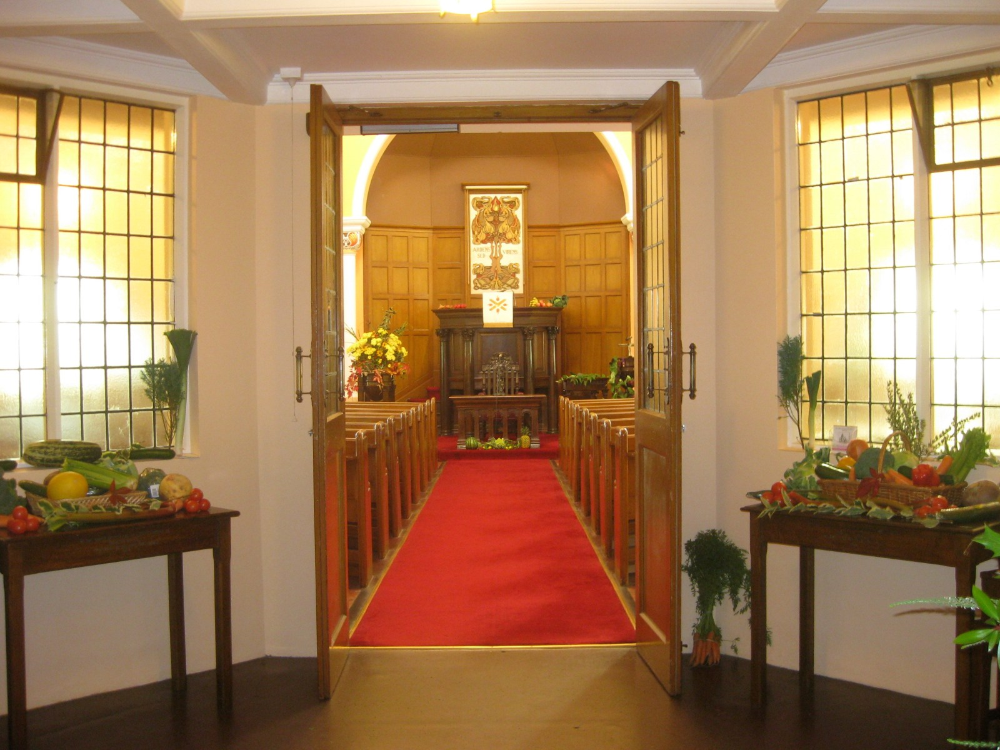
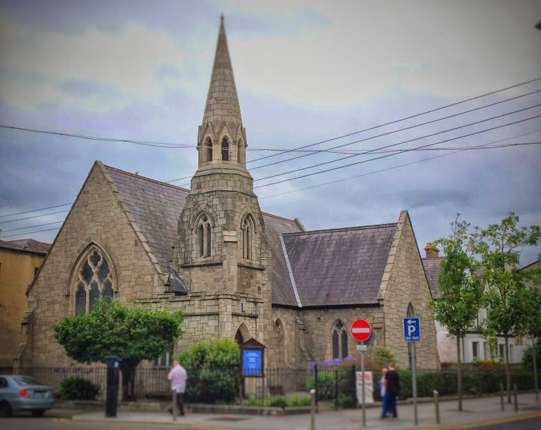

 Blackrock · Co. Dublin St. Andrew’s Blackrock Sunday worship, children and families, livestreams and the church’s history. Visit website →
 Bray · Co. Wicklow St. Andrew’s Bray Sunday worship, the church’s mission and practical information for a first visit. Visit website →